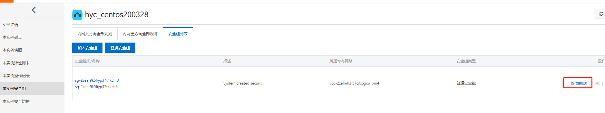

阿里云部署
阿里云部署笔记(centos版本)，购买阿里云主机 ，开启安全组
云主机实例
配置安全组

环境安装
安装git、jdk和nodejs
安装jdk
1 2 # 安装jdk rpm -ivh jdk-8 u241-linux-x64.rpm
配置jdk环境变量vi /etc/profile
1 2 3 4 export JAVA_HOME=/usr/java/jdk1.8.0_241-amd64 export JRE_HOME=/usr/java/jdk1.8.0_241-amd64/jre export PATH=$PATH:$JAVA_HOME/bin:$JRE_HOME/bin export CLASSPATH=.:$CLASSPATH:$JAVA_HOME/lib:$JRE_HOME/lib
ps: 若原先存在openjdk，需要先卸载
1 2 3 4 # 查看jdk列表 rpm -qa|grep java # 卸载 rpm -e --nodeps java-1 .8 .0 -openjdk-1 .8 .0 .181 -7 .b13.el7.x86_64
安装和配置nodejs
1 2 3 4 5 6 7 8 9 10 11 12 13 14 15 16 # 安装和配置nodejs cp node-v12.16 .1 -linux-x64.tar.xz /usr/local/ cd /usr/local/tar -xvf node-v12.16 .1 -linux-x64.tar.xz mv node-v12.16 .1 -linux-x64/ nodejs cd nodejsmkdir node_globalmkdir node_cachenpm config set prefix "/usr/local/nodejs/node_global" npm config set cache "/usr/local/nodejs/node_cache" # 配置nodejs vim /etc/profile # 在末尾添加 export PATH =$PATH :/usr/local/nodejs/bin # config nodejs # 执行生效命令 source /etc/profile
安装和配置git
1 2 3 4 5 6 # 安装和配置git yum install git git config --global user.name "yourname" git config --global user.mail "xxxxxxxxxx@mail.com" # 配置远程仓库 将pub_key黏贴到git ssh-keygen -t rsa -C "xxxxxxxxxx@mail.com"
安装和配置git
1 2 3 4 5 6 # 安装和配置git yum install git git config --global user.name "narutohyc" git config --global user.mail "1832044043 @qq.com" # 配置远程仓库 将pub_key黏贴到git ssh-keygen -t rsa -C "1832044043 @qq.com"
安装gitbook
1 2 3 4 5 6 # 安装gitbook npm install gitbook-cli -g # 添加gitbook软链接 ln -s /usr/local/nodejs/node_global/bin/gitbook /usr/bin/gitbook # gitbook指令测试 gitbook -V
git访问慢配置
Github下载速度太慢怎么办？完美解决
服务器查询
github hosts下载, 实时更新
通过修改 hosts文件，重定向网站的访问到代理服务器上
系统 hosts文件路径
Window %systemroot%\system32\drivers\etc\hosts
Mac / Linux /etc/hosts
1 2 3 4 219.76.4.4 github-cloud.s3.amazonaws.com 140.82.113.4 github.com 151.101.185.194 github.global.ssl.fastly.net
刷新DNS缓存，Linux/Mac/Windows-刷新DNS的方法
常用命令
netstat -atunlp查看端口占用
杀死指定进程
gitbook指定端口并后台执行
1 2 # 指定端口为4001 ，并放在后台执行 setsid gitbook serve --lrport=35729 --port=4001
若启动gitbook报错
1 2 3 4 Starting server ... Serving book on http://localhost:4000 Error: ENOSPC : System limit for number of file watchers reached , watch '/home /hyc /github /bk_python /node_modules /entities /mathjax /jax /output /HTML -CSS /fonts /Neo -Euler /Symbols '
则执行以下命令即可
1 2 echo fs.inotify.max_user_watches=524288 | sudo tee -a /etc/sysctl.conf && sudo sysctl -p sudo sysctl --system
批量杀死进程
查看进程号
1 2 3 4 [root@iZ2zeh6nc313zs4azjijjnZ ~]# ps -ef | grep gitbook | grep -v grep|awk '{print $2}' 24064 29387 30425
方式一：batch_shell
1 2 3 4 5 6 7 8 # !/bin/sh dsp_admin_id=`ps -ef | grep gitbook | grep -v grep|awk '{print $2}'` echo $dsp_admin_id for id in $dsp_admin_id do kill -9 $id echo "killed $id" done
方式二：单行执行
1 2 # !/bin/sh ps -ef | grep gitbook | grep -v grep|grep 4000| awk '{print $2}' | xargs kill -9


 wechat
wechat alipay
alipay